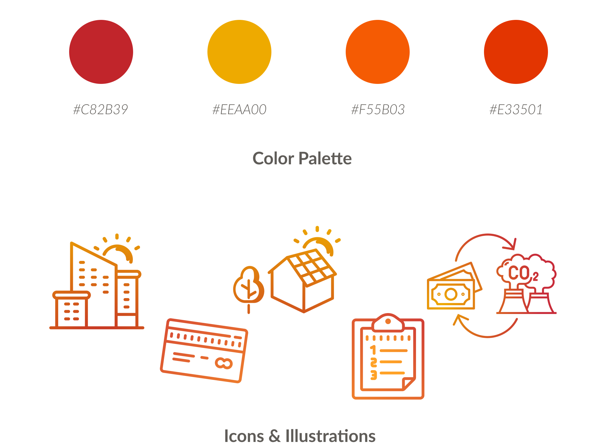

Solfium
Role: Research, Branding, Web Design, Content Creation
Timeline: May 2021 - May 2022
Tools: Figma, Adobe XD, WordPress
Overview
Solfium is focused on facilitating the customer experience for LatAm consumers switching to solar energy. As a budding startup, Solfium had just begun the switch from targeting investors to catering to consumers.
Its business model is centered on simplifying the installation process with a fixed quote, as well as managing the customer’s savings and environmental impact through its app.
Goals
1. Stand out from the crowd by having a transparent customer experience
2. Create a seamless experience between its website, app, and online social presence
Research
To create the brand’s style guide, we first needed to get the lay of the land. I began by noting and analyzing the solar energy companies in Mexico, paying special attention to the ones that offered the same area coverage as we did.
Competitor Analysis
Style Guide

Social Media
A major issue with the original site was the difficulty of updating information across the various branches and departments.
We wanted to create one shared, organization-wide vision. Because journey maps create a vision of the entire customer journey, they become a tool for creating cross-department conversation and collaboration. We decided to split the offerings into Resources and Services– how students can help themselves and how AUS can help students.
Website
Break down silos to create one shared, organization-wide vision. Because journey maps create a vision of the entire customer journey, they become a tool for creating cross-department conversation and collaboration. Journey mapping could be the first step in building an organization-wide plan of action to invest in customer experience, as it helps answer the question, “Where do we start?” by highlighting areas of friction. Assign ownership of key touchpoints to internal departments. Often, areas of inconsistencies and glitches in customer journeys exist simply because no internal team has been tasked with ownership of that element. Journey maps can create clarity around alignment of departments or groups with different stages or key touchpoints in the journey that need addressing.
Learnings
Reposting/Resharing – Re-sharing posts from other accounts did not achieve as many impressions as posting original content, regardless of the timing between the original post and the re-share.
Welcome! – Welcome posts for new team members consistently achieved more impressions than the average post.
Images vs. Videos – On average, video posts received less impressions than image posts on LinkedIn. In terms of images, photos of people received more impressions than infographics (both original and from news articles.)